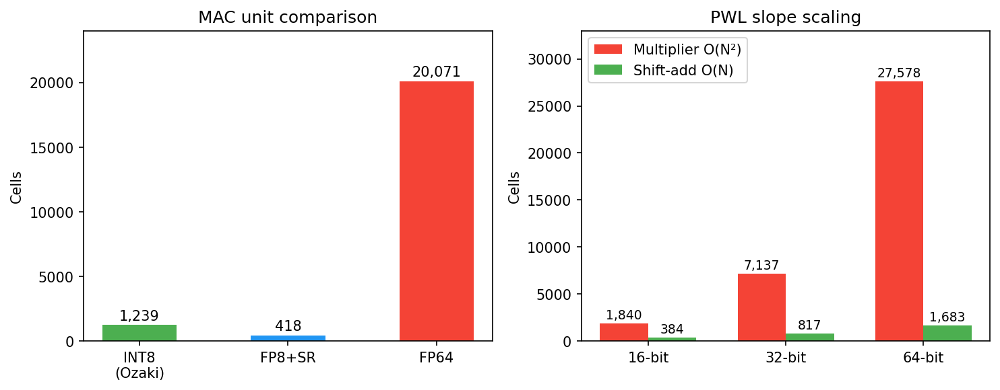
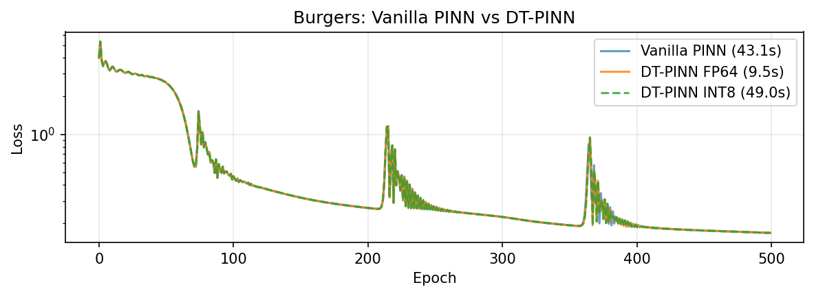
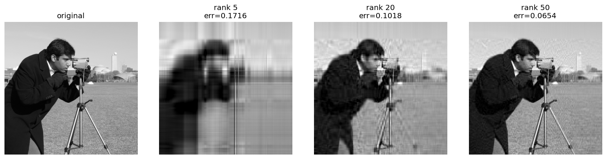

Numeric extremism
There is a clear split in what next-gen infrastructure should optimise for:
- LLM serving and inference providers want compression, quantisation, and tokens per second
- Science and engineering want precision, stability, high-order differentiability, and versatility
It is tempting as a hardware company to platform cheap inference alone, but there is a long, rich history of real analysis in engineering that I don't think holds without floating-point representation. I will not bow to trade-offs and mutual exclusivity.
Ozaki scheme II recovers FP64 accuracy from INT8 and FP16 by decomposing floats, running the matmuls at lower precisions, and reconstructing with the Chinese Remainder Theorem. INT8 MACs are 16x smaller than FP64, so the same die area gives 16x the compute. smelt extends the same approach to LLMs with ternary quantisation and bit-shift activations on commodity hardware.
fp-emulation
github ↗

tensor_inv
github ↗